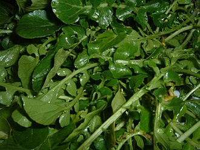

クレソンの生産量 都道府県ランキング
全18県の順位と、とれた量
クレソンが日本でいちばん多くとれるのは山梨県です。245 tで、全国（352 t）の70%を占めます。

| 順位 | 都道府県 | 収穫量 | 全国に占める割合 |
|---|---|---|---|
| 1位 | 山梨県 | 245 t | 70% |
| 2位 | 沖縄県 | 23 t | 6.5% |
| 3位 | 静岡県 | 15 t | 4.3% |
| 4位 | 大阪府 | 12 t | 3.4% |
| 5位 | 和歌山県 | 10 t | 2.8% |
| 6位 | 大分県 | 10 t | 2.8% |
| 7位 | 福井県 | 7 t | 2.0% |
| 8位 | 埼玉県 | 5 t | 1.4% |
| 9位 | 愛知県 | 5 t | 1.4% |
| 10位 | 島根県 | 5 t | 1.4% |
| 11位 | 徳島県 | 5 t | 1.4% |
| 12位 | 兵庫県 | 2 t | 0.6% |
| 13位 | 岡山県 | 2 t | 0.6% |
| 14位 | 福島県 | 1 t | 0.3% |
| 15位 | 茨城県 | 1 t | 0.3% |
| 16位 | 京都府 | 1 t | 0.3% |
| 17位 | 愛媛県 | 1 t | 0.3% |
| 18位 | 宮崎県 | 1 t | 0.3% |
この数字について
- 分類：アブラナ科
- 全国の収穫量：352 t
- この数字が表すもの：収穫量（畑や田でとれた重さ）
- 調査：地域特産野菜生産状況調査 令和6年産
- 18県分を調査（調査していない県は順位に入りません）
クレソンの生産量について、よくある質問
- クレソンの生産量が日本一の都道府県はどこですか？
- 山梨県です。地域特産野菜生産状況調査（令和6年産）で245 tでした。
- クレソンの生産量ランキング2位・3位はどこですか？
- 2位は沖縄県（23 t）、3位は静岡県（15 t）です。
- クレソンの生産量ランキング4位・5位はどこですか？
- 4位は大阪府（12 t）、5位は和歌山県（10 t）です。クレソンの全18県の順位は上の表のとおりです。
- クレソンの全国の生産量はどれくらいですか？
- 352 t（令和6年産）です。